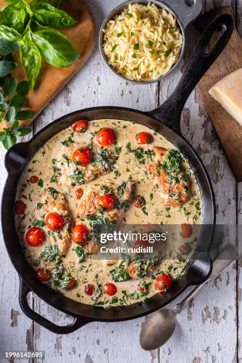

Home
Tuscan Chicken

(picture sourced from Getty Images, by photographer rudisill)
Marry Myself Chicken
This dish, sometimes called 'Marry Me Chicken' when advertised to young newlyweds, was the first dish I made that was a real hit with the people I was cooking for. It's a simple, single-pan dish, but it looks impressive, tastes delightful, and builds a lot of confidence by involving a lot of different skills in small, controllable ways. It really was effective in convincing me to keep up the effort in learning to cook.
I'm getting a little burned out on these descriptions, and I don't think anyone will read them, anyways... So, without further ado, here we go!
This recipe is referenced from Delish, courtesy of Lena Abraham.
Ingredients
- 1 tbsp. extra-virgin olive oil
- 4 chicken breasts, boneless, skinless.
- Kosher salt, to taste.
- Ground black pepper, to taste.
- 1 tsp. dried oregano
- 3 tbsp. butter
- 3 cloves garlic, minced
- 1 and 1/2 cups cherry tomatoes, halved.
- 3 cups baby spinach
- 1/2 cup heavy cream
- 1/4 cup parmesan, grated.
- 1 lemon, cut into wedges, for serving.
Steps
- In a skillet, heat oil on medium. Add chicken, and season with salt, pepper, and oregano. Cook until browned and cooked through (internal temp 165F-- about 8m per side.) Remove from skillet and set aside for now.
- In the same skillet, still on medium heat, melt butter. Stir in garlic and cook for 1min, until fragrant. Add cherry tomatoes, season with salt and pepper (don't overdo it-- remember, you already seasoned the chicken.) Cook these until they begin to burst. Add the spinach, and continue to cook until that begins to wilt.
- Stir in the heavy cream and parmesan, bring mixture to simmer, and then reduce heat to low. Simmer the sauce until slightly reduced, about 3min. At this point, reintroduce the chicken, and cook (still on low) until heated through, 5-7min.
- Dress with lemon wedges and serve!